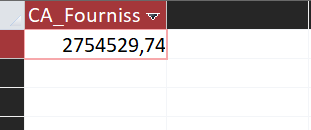
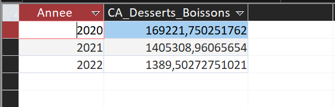
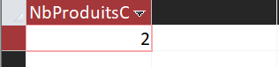
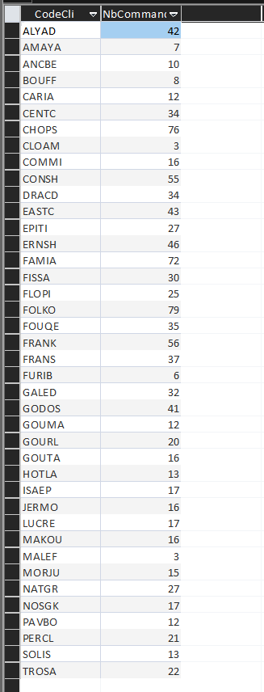
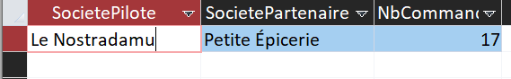

Origine des ventes, santé, offre commerciale et partenariat entre clients : quatre indicateurs pour guider
KDou.
Quatre indicateurs mesurent l’origine des ventes, la santé, l’offre et les réseaux de clients. Ils s’appuient
sur la formule du chiffre d’affaires : quantité × coût d’achat × coefficient de marge × (1 −
remise), avec une remise stockée en fraction.
Origine : chiffre d’affaires avec les fournisseurs de l’UE
Énoncé : quel est le chiffre d’affaires total généré à ce jour avec les fournisseurs
situés dans l’Union européenne ?
Objectif : mesurer la part des ventes qui repose sur des approvisionnements européens,
donc potentiellement plus proches.
Intérêt pour KDou : savoir quelle part de l’activité dépend de
fournisseurs de l’UE et où des achats plus proches seraient possibles, pour réduire les distances de
transport.
Construction : FROM : DetailCommande, Produit, Categorie, Fournisseur et Pays. WHERE :
la colonne UE du pays vaut "Membre" (l’autre valeur est "Hors"). SELECT : somme du chiffre d’affaires de
chaque ligne. La France est membre de l’UE : elle est incluse.
SELECT Sum(D.[Quantité] * P.CoutAchat * Ca.CoefMarge * (1 - D.[Remise (%)])) AS CA_Fournisseurs_UE
FROM (((DetailCommande AS D INNER JOIN Produit AS P ON D.[Réf produit] = P.RefProd)
INNER JOIN Categorie AS Ca ON P.CodeCateg = Ca.CodeCateg)
INNER JOIN Fournisseur AS F ON P.NoFour = F.NoFour)
INNER JOIN Pays AS Pa ON F.NoPays = Pa.NoPays
WHERE Pa.UE = "Membre";

Chiffre d’affaires total avec les fournisseurs de l’UE : 2 754 529,74 €.
Chiffre d’affaires selon l’origine des fournisseurs
Origine
Chiffre d’affaires
Part du total
UE (France incluse)
2 754 529,74 €
55,5 %
dont France
782 955,62 €
15,8 %
Hors UE
2 208 860,08 €
44,5 %
Détail du chiffre d’affaires par pays du fournisseur
Pays
Statut
Chiffre d’affaires
Allemagne
Membre de l’UE
874 354,40 €
France
Membre de l’UE
782 955,62 €
Australie
Hors UE
657 683,01 €
Italie
Membre de l’UE
582 104,68 €
Canada
Hors UE
484 957,09 €
États-Unis
Hors UE
344 411,22 €
Japon
Hors UE
236 730,37 €
Finlande
Membre de l’UE
207 189,57 €
Royaume-Uni
Hors UE
199 316,65 €
Suède
Membre de l’UE
178 645,62 €
Norvège
Hors UE
141 081,25 €
Singapour
Hors UE
95 011,31 €
Espagne
Membre de l’UE
91 308,70 €
Brésil
Hors UE
49 669,17 €
Danemark
Membre de l’UE
28 751,28 €
Pays-Bas
Membre de l’UE
9 219,88 €
Interprétation : 55,5 % du chiffre d’affaires (2 754 529,74 € sur 4 963 389,82 €) vient
de fournisseurs de l’UE, dont 15,8 % de la France seule. Les fournisseurs hors UE pèsent 44,5 %, surtout
l’Australie, le Canada et les États-Unis, donc des trajets longs. C’est là que des fournisseurs
européens équivalents réduiraient le plus les distances.
Santé : chiffre d’affaires annuel des desserts et des boissons
Énoncé : quel chiffre d’affaires annuel génèrent ensemble les catégories desserts et
boissons ?
Objectif : suivre le poids des produits sucrés dans les ventes, année par année.
Intérêt pour KDou : mesurer la part des desserts et boissons dans
l’activité, pour décider s’il faut la limiter ou la compenser par des produits plus sains.
Construction : FROM : Commande, DetailCommande, Produit et Categorie. WHERE : catégorie
Desserts ou Boissons. GROUP BY : l’année de la commande. SELECT : somme du chiffre d’affaires. ORDER BY
: année.
SELECT Year(Co.DateCde) AS Annee,
Sum(D.[Quantité] * P.CoutAchat * Ca.CoefMarge * (1 - D.[Remise (%)])) AS CA_Desserts_Boissons
FROM ((Commande AS Co INNER JOIN DetailCommande AS D ON Co.[N° commande] = D.[N° commande])
INNER JOIN Produit AS P ON D.[Réf produit] = P.RefProd)
INNER JOIN Categorie AS Ca ON P.CodeCateg = Ca.CodeCateg
WHERE Ca.NomCateg = "Desserts" OR Ca.NomCateg = "Boissons"
GROUP BY Year(Co.DateCde)
ORDER BY Year(Co.DateCde);

Chiffre d’affaires annuel des desserts et boissons.
Chiffre d’affaires des desserts et boissons par année
Année
Chiffre d’affaires
2020
169 221,75 €
2021
1 405 308,96 €
2022
1 389,50 €
Interprétation : 2021 est la seule année complète : les desserts et boissons y
rapportent ensemble 1 405 308,96 €. Pour cette année, les boissons représentent 913 374 € et les
desserts
491 935 €. Les données vont de juillet 2020 à novembre 2022 ; 2020 est donc partielle et 2022 ne compte
que 5 commandes. La chute en 2022 ne signifie pas une baisse des ventes.
Offre : produits carnés jamais commandés
Énoncé : combien de produits carnés du catalogue n’ont jamais été commandés ?
Objectif : repérer les références de viande qui ne se vendent pas.
Intérêt pour KDou : éviter de garder un stock inutile, source de
gaspillage et de coûts, et décider de retirer ou de limiter ces références.
Construction : c’est une différence : produits de viande moins produits commandés. FROM
: Produit joint à Categorie, puis jointure externe gauche avec DetailCommande. WHERE : catégorie Viandes
et référence absente des commandes (IS NULL). SELECT : Count.
SELECT Count(P.RefProd) AS NbProduitsCarnesNonCommandes
FROM (Produit AS P INNER JOIN Categorie AS Ca ON P.CodeCateg = Ca.CodeCateg)
LEFT JOIN DetailCommande AS D ON P.RefProd = D.[Réf produit]
WHERE Ca.NomCateg = "Viandes" AND D.[Réf produit] IS NULL;

Nombre de produits carnés jamais commandés.
Interprétation : 2 produits de la catégorie Viandes n’ont jamais été commandés entre
juillet 2020 et novembre 2022. « Carné » désigne ici la catégorie Viandes, poissons exclus. Ces deux
références sont les premières à réexaminer.
Partenariat : pilotes et partenaires ayant autant de commandes
Énoncé : existe-t-il des clients pilotes ayant autant de commandes que leurs clients
partenaires ?
Objectif : repérer les réseaux où pilote et partenaires sont aussi actifs les uns que
les autres.
Intérêt pour KDou : identifier les réseaux équilibrés, où les livraisons
groupées sont les plus naturelles, pour limiter les trajets et les émissions.
Construction : en deux étapes. D’abord une requête enregistrée, R_NbCommandes_ParClient,
compte les commandes de chaque client. Ensuite la table Clientele est utilisée deux fois (pilote et
partenaire, reliés par CodeCliPart), jointe deux fois à cette requête.
Clients sans commande : les jointures sont externes gauches, donc un client sans
commande reste dans le résultat avec un nombre de commandes vide. Nous le traitons comme 0 commande :
deux clients sans commande ont « autant » de commandes (0), ce que la clause OR … IS NULL gère. Aucun
couple de ce type n’apparaît ici.
Étape 1 : commandes par client
SELECT Co.CodeCli, Count(Co.[N° commande]) AS NbCommandes
FROM Commande AS Co
GROUP BY Co.CodeCli;

Nombre de commandes de chaque client (requête R_NbCommandes_ParClient).
Étape 2 : comparaison entre pilote et partenaire
SELECT Pil.Societe AS SocietePilote, Par.Societe AS SocietePartenaire, N1.NbCommandes AS NbCommandes
FROM ((Clientele AS Pil INNER JOIN Clientele AS Par ON Pil.CodeCli = Par.CodeCliPart)
LEFT JOIN R_NbCommandes_ParClient AS N1 ON Pil.CodeCli = N1.CodeCli)
LEFT JOIN R_NbCommandes_ParClient AS N2 ON Par.CodeCli = N2.CodeCli
WHERE (N1.NbCommandes = N2.NbCommandes)
OR ((N1.NbCommandes IS NULL) AND (N2.NbCommandes IS NULL))
ORDER BY Pil.Societe, Par.Societe;

Couple pilote et partenaire ayant le même nombre de commandes.
Couples pilote et partenaire avec le même nombre de commandes
Pilote
Partenaire
Commandes de chacun
Le Nostradamu
Petite Épicerie
17
Interprétation : oui, mais un seul réseau est équilibré : Le Nostradamu et Petite
Épicerie ont passé 17 commandes chacun. C’est le meilleur candidat pour tester des livraisons groupées.